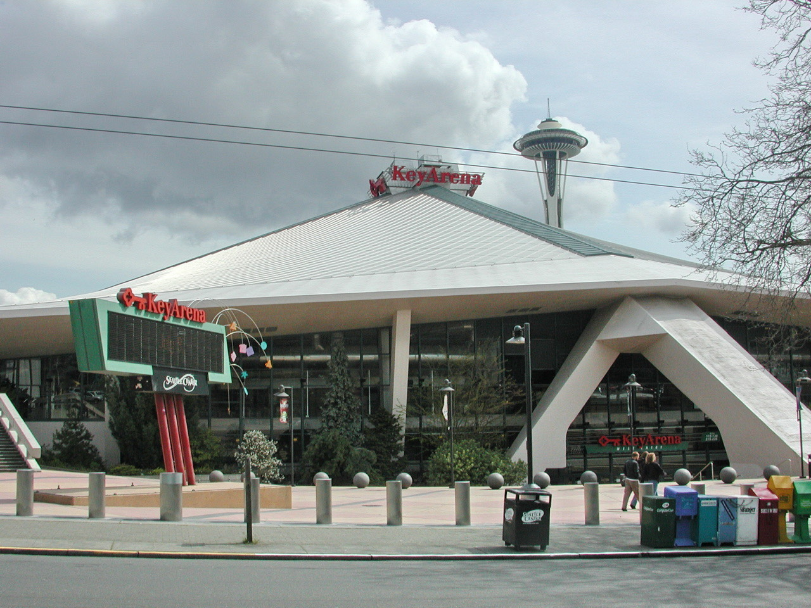

Politics and Power
Three groups held power over public money: Seattle voters, the state legislature, and NBA owners. For each one I ask what it could say yes or no to, and what the owners did next.

Real History Project · Malhar Pawar · 2026
What was the effect of the public arena-funding dispute on the SuperSonics’ departure from Seattle, 2006–2008?
The simple story
My first plan was a chain: an old arena led to owners wanting public money, which led to Initiative 91, the state saying no, and Oklahoma City. It is tidy. Tip the first one.
Tip the first domino to watch the chain fall.
The question
Research question
What was the effect of the public arena-funding dispute on the SuperSonics’ departure from Seattle, 2006–2008?
It can be answered in more than one way: the dispute may have been the main cause of the move, one cause among several, or mainly the public reason for a decision the owners had already made.Three groups held power over public money: Seattle voters, the state legislature, and NBA owners. For each one I ask what it could say yes or no to, and what the owners did next.
A private team asked taxpayers to pay for the building it needed, and another city offered public money to attract it. I follow the money: what was asked, what was offered, and what the settlement put a price on.
Seattle’s political response and the owners’ relocation strategy are two processes. The timeline runs them side by side, and the arrows in the causal web show where one pushed the other.
The evidence conflicts, and each speaker had something to gain. Every card names its source, whose voice it carries, and a limit, and you can filter the web by voice.
Two processes, side by side
On the left, how Seattle and Washington answered the request for public money. On the right, what the owners did. Events in the middle belong to both. Select any card to jump to the cause it belongs to.
Several causes at once
Each circle is a possible cause, sized by the weight I currently give it. Select one for its evidence, whose voice it carries, and its limits. Dashed arrows show how it pushed on other causes. They are my argument, not established fact.
| Cause | Weight | Theme | Pushed on |
|---|
Your turn
Spend 100 points across the seven causes before looking at mine. No weighting is the right one. The question is what evidence would move it.
My working answer
The funding dispute shaped how and when the Sonics left more than why they left.
Within five months, from November 2006 to April 2007, both public routes closed. Seattle voters passed Initiative 91, which bound only the city, and the Legislature decided not to vote on a Renton arena that I-91 never touched. The state said no again in March 2008. That gave the owners a public record of having tried, and it set the timetable for the lease fight that followed.
But the dispute does not fully explain the move. The April 2007 emails, McClendon’s remark, and Bennett’s refusal to sell the team to the group behind the 2008 rescue plan all point toward owners who were already looking at Oklahoma City, which had voted public money by March 2008. Each piece of that evidence is contested and each speaker had something to gain, so I weigh the evidence instead of counting it.
The dispute closed the doors. The question is whether the owners were already looking for the exit.
Two smaller causes matter too: falling popularity, which made taxpayers less willing to pay (Kershner 2009), and a KeyArena remodel that left it short of the revenue features modern NBA arenas rely on (Booth 2026).
Closed the city’s route (I-91) and the state’s route (Renton, then KeyArena), and gave the owners a public reason for leaving.
Why Bennett kept saying the team was not for sale, and why a partner was asking in April 2007 about moving the team “here for next season.”
Stronger evidence on I-91’s role, the court record, original statements instead of second-hand reports, and attendance numbers.
Why it matters now
The Sonics might return. The question that stalled the 2006–2008 efforts, who pays for the arena?, now has a different answer.
| Question | 2006–2008 | 2026 |
|---|---|---|
| Who pays for the arena? | The owners asked for $300 million of state-authorized, King County–collected taxes toward a roughly $500 million Renton arena. The Legislature never voted on it. (Brunner 2007; Associated Press 2007) | Climate Pledge Arena cost $1.15 billion and was financed privately by Oak View Group, under a development and lease contract with the city. (Eide 2021; Seattle Center) Continuity: “who pays?” is still central Change: the answer is private money |
| Who decides if a team moves or returns? | NBA owners approved the relocation 28 to 2 in April 2008. (Kershner 2009) | NBA owners voted in March 2026 to explore expansion to Seattle and Las Vegas. (NBA Communications 2026) Continuity: the league holds the final vote |
| What did voters say? | 74% of Seattle voters passed Initiative 91 in 2006. (Licata 2012) | In 2012 the City Council was still testing a proposed arena deal against I-91. I have not yet confirmed how it applies today. (Licata 2012) Continuity: the rule outlived the team |
| What happened to the Sonics’ identity? | The settlement kept the name, logo and colors available for a replacement Seattle team. (Associated Press 2008) | I have not yet confirmed who controls the name and logo today. |
Where the NBA process stands · checked Oct 21, 2026
Open question I’m still researching: how Initiative 91 shaped the later KeyArena and Climate Pledge deal, and whether it was ever formally applied.
Evidence
MLA entries for every source on this page. Each is also a card in the causal web, with its voice and its limits.
Still to find for the final